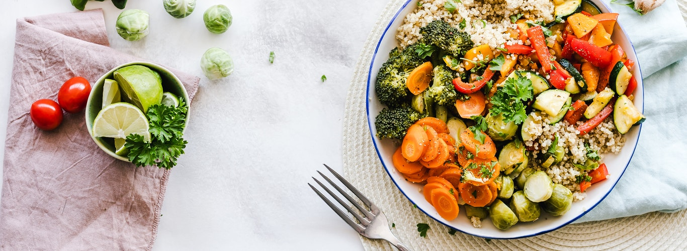

COUSCOUS CON VERDURE
Il Couscous di verdure è un primo piatto colorato, gustoso e veloce! A base di cous cous, chicchi dorati protagonisti dei piatti tipici della cucina nordafricana.
PANZANELLA
Un piatto unico, a base di pane e pomodori,perfetto per la bella stagione: facile e veloce, senza cottura e ideale per una giornata al mare o per un picnic primaverile.

CROSTINO CON SALMONE MARINATO
Conosciamo le bruschette per il loro carattere rustico e informale, ma anche loro possono rivelare un inaspettato lato gourmet, affiancate al pesce crudo.
CROSTATA DI FRUTTA
La crostata di frutta è un dolce fresco e facile da preparare, perfetto per tutte le occasioni: una festa di compleanno, un buffet, come fine pasto di un pranzo o cena estiva.